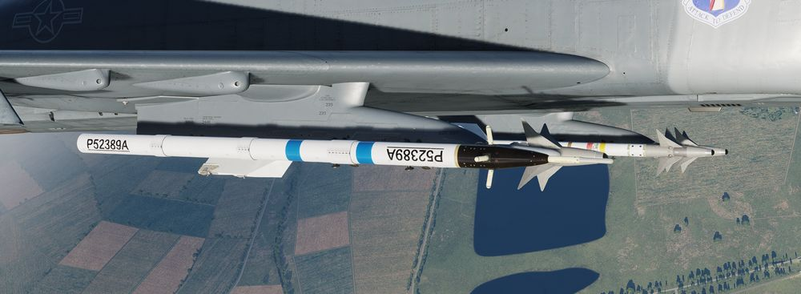

Pods
SUU-23/A Gun Pod

External gun pods holding 1200 rounds of ammunition, firing at a rate of 6000 rounds per minute. See the gun section for more.
AN/AVQ-23 Pave Spike

The AN/AVQ-23 Pave Spike targeting pod, capable of spotting and tracking targets during daylight-conditions and using a laser to guide weapons on target. See the systems section for more.
ALQ-131 ECM Pod

Pod for electronic countermeasures, such as jamming radars and radar guided missiles. See the ECM section for more.
AN/ASQ-T50 TCTS ACMI Pod

Pod used to record in-flight data for training and later analysis.
🚧 The pod is currently visual only and has no function.
ALE-40 Dispenser

Countermeasure dispensers holding chaff and flare. See the countermeasures section for more.